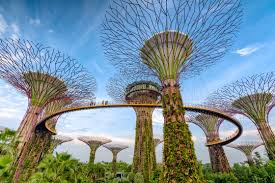

Gardens by the Bay 🌿
Bienvenido al corazón verde de Singapur. Descubre un mundo futurista donde la naturaleza y la tecnología se encuentran para crear una experiencia inolvidable. ¡Explora las maravillas de Gardens by the Bay! ✨
Descubre las Atracciones Principales 🌷
Gardens by the Bay es un complejo de parques que ofrece una variedad de experiencias únicas. ¡No te pierdas lo siguiente! 👇
- Supertree Grove: Estas estructuras icónicas, que van de 25 a 50 metros de altura, albergan una gran variedad de plantas y por la noche se iluminan con un impresionante espectáculo de luces y sonido. 💡
- Flower Dome: El invernadero de cristal más grande del mundo, que reproduce el clima mediterráneo y subtropical. Admira una increíble colección de flores y plantas de todo el planeta. 🌺
- Cloud Forest: Un impresionante paisaje montañoso con una cascada interior de 35 metros de altura y una niebla perpetua que crea un ambiente mágico y fresco. 💧
- OCBC Skyway: Un puente elevado que conecta varios Supertrees, ofreciendo vistas panorámicas del parque y el horizonte de Singapur. ¡Ideal para fotografías! 📸
- Children's Garden: Un área de juegos interactiva y acuática perfecta para los más pequeños, con toboganes y senderos educativos. 🧒👧
Nuestra Galería de Fotos 🖼️

Explora Gardens by the Bay en Video 🎬
Sumérgete en la belleza y la majestuosidad de Gardens by the Bay desde la comodidad de tu hogar con este video. 👇
Horarios y Precios 💲
Planifica tu visita con nuestra guía de horarios y precios para las atracciones principales. ¡Te esperamos! 👇
| Atracción | Horario Diario | Precio de Entrada (Adulto) |
|---|---|---|
| Flower Dome 🌺 | 9:00 AM - 9:00 PM | SGD 20 |
| Cloud Forest ☁️ | 9:00 AM - 9:00 PM | SGD 20 |
| OCBC Skyway 🌉 | 9:00 AM - 9:00 PM | SGD 10 |
| Supertree Grove (Acceso Base) 🌳 | 5:00 AM - 2:00 AM | Gratis |
| Children's Garden 🧑🧒 | 9:00 AM - 7:00 PM (Cerrado los Martes) | Gratis |
Información Útil para Tu Visita ✨
Aquí tienes algunos consejos y detalles importantes para que tu experiencia en Gardens by the Bay sea lo más agradable posible. ¡Planifica con antelación y aprovecha al máximo! 👇
- Mejor época para visitar: Los meses más frescos y secos son de febrero a abril, pero Gardens by the Bay es hermoso todo el año. Considera visitar durante la semana para evitar multitudes.
- Espectáculos de luces: No te pierdas el "Garden Rhapsody" en Supertree Grove, un impresionante espectáculo de luces y música que se realiza dos veces por noche. ¡Es mágico!
- Accesibilidad: El parque es accesible para sillas de ruedas y cochecitos, con rampas y ascensores disponibles en las atracciones principales.
- Comida y bebida: Hay varias opciones de restaurantes, cafés y puestos de comida dentro del parque para todos los gustos y presupuestos.
- Vestimenta: Se recomienda ropa cómoda y ligera, así como zapatos adecuados para caminar. Un paraguas o impermeable puede ser útil debido a los posibles chubascos.
Nuestro Compromiso con la Conservación 💚
En Gardens by the Bay, estamos dedicados a la sostenibilidad y la conservación del medio ambiente. Descubre cómo contribuimos a un futuro más verde a través de nuestras iniciativas y tecnologías innovadoras.
- Energía renovable: Los Supertrees no solo son estructuras hermosas, sino que también actúan como "árboles solares" que recogen energía solar para la iluminación nocturna y otros usos.
- Reciclaje de agua: El parque utiliza sistemas avanzados para recolectar y reciclar el agua de lluvia, reduciendo significativamente nuestro consumo de agua.
- Educación ambiental: Ofrecemos programas educativos para visitantes de todas las edades, promoviendo la conciencia sobre la importancia de la biodiversidad y la sostenibilidad.
- Protección de especies: Colaboramos con instituciones globales para proteger y propagar especies de plantas en peligro de extinción.
Creemos que la belleza de la naturaleza y la innovación tecnológica pueden coexistir para un futuro más sostenible.
Eventos y Exhibiciones Especiales 🗓️
Gardens by the Bay es un centro vibrante de actividades, con una variedad de eventos y exhibiciones que cambian a lo largo del año. ¡Siempre hay algo nuevo que descubrir! 👇
- Exposiciones florales temáticas: Regularmente, el Flower Dome alberga exposiciones temáticas que muestran flores de diferentes regiones y culturas.
- Conciertos y actuaciones: Disfruta de música en vivo y espectáculos culturales en el Supertree Grove y otras áreas del parque.
- Festivales de temporada: Celebra festividades como la Navidad, el Año Nuevo Chino y Diwali con decoraciones y actividades especiales.
- Talleres y tours: Participa en talleres de jardinería o únete a tours guiados para aprender más sobre las plantas y la sostenibilidad del parque.
Consulta nuestro calendario de eventos en el sitio web oficial para no perderte nada.
Contáctanos y Planifica Tu Visita ✉️
¿Tienes preguntas o necesitas más información sobre Gardens by the Bay? No dudes en contactarnos. ¡Estamos aquí para ayudarte a planificar tu aventura! 👇
- Correo Electrónico: cazaresdarey@gmail.com
- Teléfono: +65 6420 6848
- Dirección: 18 Marina Gardens Dr, Singapur 018953
También puedes visitar nuestro sitio web oficial para la información más actualizada y reservas.
Acerca de Gardens by the Bay
Gardens by the Bay es un proyecto visionario de Singapur para transformar su "Ciudad Jardín" en una "Ciudad en un Jardín". Inaugurado en 2012, este parque galardonado ha cautivado a millones con su innovadora combinación de horticultura, sostenibilidad y diseño futurista. Nuestro objetivo es educar e inspirar a los visitantes sobre la importancia de la conservación de la biodiversidad.